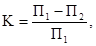
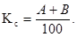
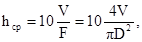

МИНИСТЕРСТВО ТРАНСПОРТНОГО СТРОИТЕЛЬСТВА СССР
ГОСУДАРСТВЕННЫЙ ВСЕСОЮЗНЫЙ ДОРОЖНЫЙ
НАУЧНО-ИССЛЕДОВАТЕЛЬСКИЙ ИНСТИТУТ
СОЮЗДОРНИИ
ПОСОБИЕ
ПО
УСТРОЙСТВУ ПОВЕРХНОСТНЫХ
ОБРАБОТОК
НА АВТОМОБИЛЬНЫХ ДОРОГАХ
(к СНиП
3.06.03-85)
Москва 1990
Утверждено зам.
директора Союздорнии
канд. техн. наук В.М. Юмашевым
Одобрено ГКТУ
дорстроя
(письмо № 5602/402 от 3.11.88 г.)
Отражены вопросы, касающиеся классификации поверхностных обработок, технологии и способов их устройства.
Приведены требования к материалам и слоям поверхностной обработки, контролю качества и технике безопасности.
Изложены нестандартные методы испытания как материалов, так и слоев поверхностной обработки.
Настоящее Пособие разработано в развитие главы СНиП 3.06.03-85 и предназначено для использования при производстве работ по устройству поверхностных обработок на вновь строящихся и реконструируемых автомобильных дорогах, а также по ремонту дорожных покрытий.
Пособие разработано на основе результатов научно-исследовательских и опытно-экспериментальных работ, выполненных в Союздорнии и его Казахском филиале, НПО «Росдорнии» Минавтодора РСФСР, НПО «Дорстройтехника» Миндорстроя БССР, Госдорнии Миндорстроя УССР с учетом отечественного и зарубежного опыта по устройству поверхностных обработок.
В Пособии приведены определение и классификация поверхностных обработок; требования, предъявляемые к поверхностным обработкам, и способы их устройства; изложены требования к материалам, способы контроля качества устройства поверхностных обработок; требования техники безопасности и охраны труда.
Пособие составили кандидаты технических наук Э.М. Рвачева, И.А. Плотникова, Э.А. Казарновская (Союздорнии), канд. техн. наук О.А. Красиков, инж. Ф.К. Андриади (Казахский филиал Союздорнии), канд. техн. наук А.Я. Эрастов, инж. Л.Г. Панина (НПО «Росдорнии»), инженеры Г.Н. Козлов, И.А. Орехов (НПО «Дорстройтехника»), канд. техн. наук В.П. Володько, инж. Н.Н. Колинченко (Госдорнии) при участии инж. Я.Х. Абрамова (НИЛ Минстройавтодора АзССР).
Замечания и предложения по настоящей работе просьба направлять по адресу: 143900, Московская обл., г. Балашиха-6, ш. Энтузиастов, 79, Союздорнии.
1.1. Поверхностная обработка - технологический процесс устройства на дорожных покрытиях тонких слоев с целью обеспечить шероховатость, водонепроницаемость, износостойкость и плотность покрытий. Слой, устраиваемый этим способом, также называют поверхностной обработкой.
1.2. Существует много различных способов устройства поверхностных обработок, из которых в настоящем Пособии рассматривают три наиболее распространенные в практике дорожного строительства:
использование фракционированного щебня*) и различных органических вяжущих, в том числе эмульгированных;
применение эмульсионно-минеральных смесей литой консистенции на катионных эмульсиях;
использование битумных шламов.
*) Под фракционированным щебнем понимается щебень выделенный по узкому размеру зерен при ситовом анализе, в частности щебень фракций 5 - 10, 10 - 15,15 - 20 мм.
1.3. При выборе способа устройства поверхностной обработки покрытий необходимо учитывать ее назначение, условия движения на дороге, климатические условия района строительства, показатель твердости дорожного покрытия, наличие материалов и средств механизации.
Рекомендуемые области применения поверхностных обработок в зависимости от категории дороги, условий движения и дорожно-климатической зоны приведены в табл. 1.
Таблица 1
Рекомендуемые области применения поверхностных обработок
|
Способы устройства поверхностных обработок в зависимости от категории дороги |
|||||||||||
|
I |
II |
III |
IV |
||||||||
|
и дорожно-климатической зоны |
|||||||||||
|
I - II |
III - IV |
I - II |
III - IV |
I - II |
III - IV |
I - II |
III - IV |
||||
|
1 |
2 |
3 |
4 |
5 |
6 |
7 |
8 |
9 |
|||
|
Опасные |
Фракционированный щебень и вяжущие с добавками полимеров |
Фракционированный щебень, битумы, дегтебитумные вяжущие или катионные битумные эмульсии |
Фракционированный щебень, битумы, дегтебитумные вяжущие или эмульсии: |
Щебеночные эмульсионно-минеральные смеси на катионных эмульсиях |
|||||||
|
катионные |
анионные |
||||||||||
|
Щебеночные эмульсионно-минеральные смеси на катионных эмульсиях |
Щебеночные эмульсионно-минеральные смеси на катионных эмульсиях |
- |
Щебеночные битумные шламы |
||||||||
|
Затрудненные |
Фракционированный щебень, битумы или катионные битумные эмульсии |
Фракционированный щебень, битумы, дегтеполимерные вяжущие или катионные битумные эмульсии |
Фракционированный щебень, битумы, дегтебитумные вяжущие или эмульсии: |
Щебеночные и песчаные эмульсионно-минеральные смеси на катионных эмульсиях |
|||||||
|
катионные |
анионные |
||||||||||
|
Щебеночные эмульсионно-минеральные смеси на катионных эмульсиях |
Щебеночные и песчаные эмульсионно-минеральные смеси на катионных эмульсиях |
Щебеночные битумные шламы во II зоне при благоприятных погодных условиях |
Щебеночные битумные шламы |
||||||||
|
Щебеночные битумные шламы во II зоне при благоприятных погодных условиях |
Щебеночные битумные шламы |
||||||||||
|
Легкие |
Фракционированный щебень исходя из нормативного межремонтного срока службы покрытия |
Щебеночные эмульсионно-минеральные смеси на катионных эмульсиях |
Песчаные эмульсионно-минеральные смеси на катионных эмульсиях |
Песчаные эмульсионно-минеральные смеси на катионных эмульсиях |
|||||||
|
- |
Щебеночные битумные шламы |
Щебеночные и песчаные битумные шламы (кроме I зоны) |
Щебеночные и песчаные битумные шламы (кроме I зоны) |
||||||||
Таблица 2
Требования к поверхностным обработкам
|
Характеристика участка дороги |
Коэффициент продольного сцепления на мокром покрытии, определяемый прибором ПКРС-2У, при скорости 60 км/ч, не менее |
Показатель сцепных свойств по маятниковому прибору МП-3, не менее |
Параметры шероховатости, измеряемые по методу «песчаное пятно», не менее, для дорог категорий |
|
|||
|
при сдаче в эксплуатацию |
минимально необходимый для эксплуатации |
||||||
|
I - II |
III - IV |
|
|||||
|
Опасные |
Видимость менее расчетной; подъемы и спуски с уклонами, превышающими расчетные: зоны пересечения в одном уровне; участки, отнесенные к легким и затрудненным условиям, при уровнях загрузки свыше 0,5 |
0,60 |
0,45 |
100 |
3,0 |
2,25 |
|
|
Затрудненные |
Кривые в плане радиусами от 250 до 1000 м; спуски и подъемы с уклонами от 30 до 60 ‰; зоны сужении проезжей части (при реконструкции); участки, отнесенные к легким условиям движения при уровнях загрузки 0,3 - 0,5 |
0,50 |
0,40 |
85 |
2,0 |
1,50 |
|
|
Легкие |
Прямые или кривые радиусом 1000 м и более; горизонтальные или с продольным уклоном не более 30 ‰; элементы поперечного профиля, соответствующие табл. 4 СНиП 2.05.02-85, с укрепленными обочинами, без пересечений в одном уровне; уровень загрузки не более 0,3 |
0,45 |
0,35 |
75 |
1,5 |
1,00 |
|
1.4. Работы по устройству поверхностных обработок выполняют при температуре воздуха не ниже 15 °С; при использовании в качестве вяжущего катионных эмульсий - при температуре воздуха не ниже 5 °С.
2.1. В зависимости от назначения к слоям, устраиваемым способом поверхностной обработки, предъявляются требования по обеспечению требуемых для заданных условий коэффициента сцепления колеса автомобиля с дорожным покрытием, плотности, водонепроницаемости.
Необходимые коэффициенты сцепления, параметры шероховатости для различных условий движения приведены в табл. 2.
2.2. Плотность и водонепроницаемость поверхностных обработок, устраиваемых фракционированным щебнем, обеспечиваются обработкой поверхности покрытия вяжущим соответственно нормам расхода (см. табл. 3); при устройстве поверхностных обработок из эмульсионно-минеральных смесей и битумных шламов - составом и свойствами этих смесей (см. табл. 5, 6 и 7).
3.1. Поверхностные обработки с использованием фракционированного щебня устраивают преимущественно на участках дорог с опасными и затрудненными условиями движения на дорогах I - III категорий (см. табл. 1).
3.2. В зависимости от типа и состояния покрытия поверхностные обработки могут быть одиночными и двойными; на цементобетонных покрытиях - только двойными.
3.3. Для устройства поверхностных обработок применяют щебень марки не ниже 1200 по ГОСТ 8267-82 из трудношлифуемых изверженных и метаморфических горных пород для автомобильных дорог I и II категорий, марки 1000 - для дорог III категории и марки не ниже 800 - для дорог IV категории фракций 5 - 10, 10 - 15, 15 - 20 мм (допускается применение щебня фракций 5 - 15 и 10 - 20 мм при условии обеспечения коэффициента сцепления) преимущественно кубовидной формы зерен (зерна пластинчатой формы составляют не более 15 %); содержание пылеватых, глинистых и илистых частиц в щебне не должно превышать 1 % массы.
3.4. Выбор фракции щебня производят в зависимости от твердости дорожного покрытия h50 (прил. 1 настоящего Пособия): при h50 ≤ 16 мм используют щебень фракций 5 - 10, 10 - 15, 5 - 15, 10 - 20 мм; при h50 ≤ 23 мм - фракций 10 - 20, 15 - 20 мм. При h50 >23 мм выполняют, как правило, двойную поверхностную обработку, первый слой которой из щебня фракции 20 - 40 мм, второй - фракции 15 - 20 мм.
3.5. В качестве вяжущих используют вязкие битумы, битумы с добавками дегтей, битумы и дегти с добавками полимеров, битумные эмульсии.
3.6. Марку битума выбирают по ГОСТ 22245-76 с учетом дорожно-климатической зоны: для I - БНД 90/130 и БНД 130/200, для II и III - БНД 60/90, БНД 90/130, БНД 130/200, БН 60/90, БН 90/130 и БН 130/200, для IV и V - БНД 60/90, БНД 90/130, БН 60/90 и БН 90/130/
3.7. Битум должен выдерживать испытание на сцепление со щебнем, используемым для устройства поверхностной обработки, в соответствии с методикой, изложенной в прил. 2. При неудовлетворительном сцеплении битума со щебнем следует использовать добавки соответствующих ПАВ или производить предварительную обработку щебня дегтем или смесью битума с дегтем.
3.8. Применяемые каменноугольные дегти должны иметь марку Д-5, Д-6 и Д-7 по ГОСТ 4641-80 и использоваться на автомобильных дорогах не выше III категории. На участках дорог, проходящих по населенным пунктам, применение каменноугольных дегтей не разрешается.
3.9. При устройстве поверхностной обработки на дорогах с интенсивностью движения свыше 3000 авт/сут, с движением преимущественно грузовых автомобилей, а также в районах с резко континентальным климатом применяют битум и деготь с добавками полимеров. Дегтеполимерное вяжущее используют на дорогах не выше II категории.
3.10. Расход щебня и вяжущих должен соответствовать нормам, установленным в табл. 3.
3.11. Работы по устройству одиночной поверхностной обработки с использованием битумов, дегтебитумов, битумо- и дегтеполимерных вяжущих производят в следующем порядке:
подготовка поверхности (очистка от пыли и грязи) и ремонтные работы;
розлив вяжущего;
распределение щебня;
укатка;
уход в период формирования.
Работы по устройству двойной поверхностной обработки производят в такой последовательности:
подготовка поверхности (очистка от пыли и грязи) и ремонтные работы;
первый розлив вяжущего;
первая россыпь щебня;
укатка;
второй розлив вяжущего;
вторая россыпь щебня (между первой и второй россыпью щебня допускается перерыв не более 3 - 5 сут);
укатка;
уход в период формирования.
Таблица 3
Нормы расхода щебня и вяжущих при устройстве поверхностной обработки
|
Номер слоя |
Норма расхода |
||||
|
щебня, м3/100 м2 |
битума, л/м2 |
эмульсий, л/м2 при концентрации битума, % |
|||
|
60 |
50 |
||||
|
Одиночная поверхностная обработка |
|||||
|
5 - 10 |
- |
0,9 - 1,1 |
0,7 - 1,0 |
1,3 - 1,5 |
1,5 - 1,8 |
|
10 - 15 |
- |
1,1 - 1,2 |
0,9 - 1,0 |
1,5 - 1,7 |
1,8 - 2,0 |
|
15 - 20 |
- |
1,2 - 1,4 |
1,0 - 1,3 |
1,7 - 2,0 |
2,0 - 2,4 |
|
Двойная поверхностная обработка на асфальтобетонных и других покрытиях с органическими вяжущими |
|||||
|
15 - 20 |
1 |
1,1 - 1,3 |
0,9 - 1,1 |
1,5 - 1,8 |
1,8 - 2,2 |
|
5 - 10 |
2 |
0,7 - 1,0 |
0,7 - 1,0 |
1,3 - 1,5 |
1,5 - 1,8 |
|
Двойная поверхностная обработка на цементобетонном покрытии |
|||||
|
15 - 20 |
1 |
1,8 - 2,1 |
1,0 - 1,1 |
- |
- |
|
15 - 20 |
2 |
1,7 - 2,0 |
1,0 - 1,1 |
- |
- |
|
15 - 20 (25) |
1 |
2,0 - 2,3 |
1,2 - 1,3 |
- |
- |
|
10 - 15 |
2 |
1,4 - 1,6 |
0,9 - 1,1 |
- |
- |
|
10 - 15 |
1 |
1,6 - 1,8 |
0,9 - 1,2 |
- |
- |
|
5 - 10 |
2 |
1,2 - 1,3 |
0,9 - 1,1 |
- |
- |
Примечание. При применении черного щебня нормы расхода вяжущего снижаются на 20 - 25 %.
Розлив вяжущего производят автогудронатором. Для равномерного розлива вяжущего необходимо обеспечить бесперебойность действия сопел, равномерность работы насоса и требуемую скорость перемещения гудронатора.
Во время розлива температура битума марок БНД 60/90, БНД 90/130, БН 60/90 и БН 90/130 должна составлять 150 - 160 °С; марок БНД 130/200 и БН 130/200 - 100 - 130 °С; температура полимерно-битумного вяжущего - 140 - 160 ºС, дегтеполимерного вяжущего - 100 - 110 °С.
Распределение щебня производят самоходным щебнераспределителем, автомобилем-самосвалом с навесным приспособлением или другим механизмом, обеспечивающим быстрое и равномерное распределение щебня. На дорогах низких категорий допускается использование автогрейдера.
Щебень распределяют непосредственно после розлива вяжущего слоем в одну щебенку и укатывают катком массой 6 - 8 т за 4 - 5 проходов по одному следу.
3.14. При устройстве поверхностной обработки фракционированным щебнем применяют преимущественно катионные битумные эмульсии класса ЭБК-1, ЭБК-2, отвечающие требованиям ГОСТ 18659-81. В условиях III - IV дорожно-климатических зон и при благоприятных погодных условиях во II допускается применение анионных эмульсий класса ЭБА-1, ЭБА-2.
Эмульсии должны выдерживать испытание на сцепление пленки вяжущего со щебнем в соответствии с прил. 2 настоящего Пособия.
При устройстве поверхностной обработки на катионных битумных эмульсиях следует использовать не обработанный органическим вяжущим щебень, на анионных эмульсиях - преимущественно черный щебень.
3.15. Поверхностную обработку с использованием битумных эмульсий выполняют в следующем порядке:
подготовка поверхности (очистка от пыли и грязи) и выполнение в случае необходимости ремонтных работ;
смачивание поверхности водой (в жаркую сухую погоду);
розлив эмульсии по покрытию в количестве 30 % нормы;
распределение щебня в количестве 70 % нормы;
розлив оставшейся эмульсии (70 %);
распределение оставшегося щебня (30 %);
укатка;
уход в период формирования.
3.16. Розлив эмульсии производят аналогично указаниям п. 3.12.
Температуру и концентрацию эмульсии устанавливают в зависимости от погодных условий. При температуре воздуха ниже 20 °С рекомендуется применять эмульсию с температурой 40 - 50 °С и концентрацией битума 55 - 60 %. Подогрев эмульсии до указанной температуры следует производить непосредственно в автогудронаторе в процессе транспортирования к месту работ. При температуре воздуха выше 20 °С эмульсию применяют в холодном состоянии, а концентрацию битума можно снизить до 50 %.
Распределение щебня производят согласно п. 3.12. Механизм, распределяющий щебень, должен двигаться не далее 20 м от автогудронатора, разливающего эмульсию.
Укатку производят катком массой 6 - 8 т за 3 - 4 прохода по одному следу, приурочивая эту операцию к началу распада эмульсии.
3.17. Уход за поверхностной обработкой с применением битумных эмульсий выполняется в соответствии с указаниями п. 3.13. При использовании анионных эмульсий движение автомобилей разрешается открывать не ранее чем через 1 сут после окончания работ.
4.1. Для устройства поверхностной обработки применяют эмульсионно-минеральные смеси литой консистенции, состоящие из минеральных материалов (щебня, песка, минерального порошка), водного раствора ПАВ и катионной битумной эмульсии.
4.2. В зависимости от зернового состава эмульсионно-минеральные смеси подразделяют на щебеночные и песчаные.
Поверхностную обработку из щебеночных эмульсионно-минеральных смесей устраивают на участках дорог II - IV категорий с опасными и затрудненными условиями движения, а из песчаных эмульсионно-минеральных смесей - на участках дорог III - IV категорий с затрудненными и легкими условиями движения (см. табл. 1).
4.3. Минеральная часть эмульсионно-минеральных смесей, используемых для устройства поверхностной обработки, подбирается по принципу плотных смесей. Минеральная часть щебеночных смесей состоит из щебня фракций 5 - 10 или 5 - 15 мм, песка дробленого или смеси природного с дробленым и минерального порошка; для песчаных смесей - из песка дробленого или смеси дробленого с природным фракции 5 - 0 мм и минерального порошка.
Содержание щебня и соотношение природного и дробленого песков в смесях назначаются в зависимости от их зернового состава и требуемого коэффициента сцепления. Количество минерального порошка должно быть таким, чтобы общее содержание частиц мельче 0,071 мм было в пределах 5 - 15 %. Кроме вышеуказанных минеральных материалов, в литые эмульсионно-минеральные смеси в качестве минерального порошка можно добавлять портландцемент, гашеную известь, цементную пыль, золу уноса и т.д.
Кривые зерновых составов эмульсионно-минеральных смесей приведены на рис. 1.
4.4. Для приготовления эмульсионно-минеральных смесей используют щебень из трудношлифуемых изверженных и метаморфических горных пород марки не ниже 1000 преимущественно кубовидной формы зерен (ГОСТ 8267-82), дробленые пески из изверженных горных пород (или отсевы продуктов дробления горных пород) прочностью не ниже 1000, природные пески (ГОСТ 8736-85), минеральный порошок (ГОСТ 16557-78), катионные битумные эмульсии класса ЭБК-2 и ЭБК-3 (ГОСТ 18659-81). Содержание битума с эмульгатором должно составлять 50 - 55 % массы.
Необходимым компонентом эмульсионно-минеральных смесей является водный раствор катионных ПАВ, предназначенных для предварительного смачивания минеральных материалов и регулирования времени распада эмульсии в смеси. Рекомендуемые составы водных растворов ПАВ приведены в табл. 4.
Дозировку водных растворов ПАВ для предварительного смачивания определяют в лаборатории на конкретных материалах и уточняют на месте работ с учетом влажности минеральных материалов и их температуры. Ориентировочно она составляет 6 - 8 % массы минеральных материалов.
Рекомендуемые составы эмульсионно-минеральных смесей приведены в табл. 5.
4.5. Требования к показателям свойств эмульсионно-минеральных смесей, используемых для устройства поверхностных обработок, приведены в табл. 6.
Рис. 1. Кривые зернового состава щебеночных (а) и песчаных (б) эмульсионно-минеральных смесей
Таблица 4
Рекомендуемые составы растворов для предварительного смачивания минеральных материалов
|
Наименование компонента |
Количество компонента, % массы |
|
|
1 |
Четвертичные соли аммония (алкилтриметиламмонийхлорид - АТМ) |
0,1 - 0,6 |
|
Соляная кислота |
0,2 |
|
|
Вода |
До 100 |
|
|
2 |
БП-3 |
0,5 - 1,0 |
|
Соляная кислота |
0,25 - 0,5 |
|
|
Вода |
До 100 |
|
|
3 |
Первичные алифатические амины |
1,0 |
|
Соляная кислота |
До рН = 4,5 ÷ 5,5 |
|
|
Хлористый кальций |
0,3 - 0,5 |
|
|
Вода |
До 100 |
|
|
4 |
Первичные алифатические амины |
0,8 - 1,0 |
|
Сланцевое масло (антраценовое масло) |
2,5 - 3,0 |
|
|
Соляная кислота |
До рН = 4,5 ÷ 5,5 |
|
|
Вода |
До 100 |
|
|
5 |
Анилин |
4,5 |
|
Соляная кислота |
До рН = 4,5 ÷ 5,5 |
|
|
Вода |
До 100 |
Примечание. Растворы ПАВ составов № 1 - 3 применяются при температуре воздуха выше 20 °С, № 4 - 5 -ниже 20 ºС.
Таблица 5
Рекомендуемые составы эмульсионно-минеральных смесей литой консистенции
|
Количество компонента в смеси, % состава |
|||||||||||
|
1 |
2 |
3 |
4 |
5 |
6 |
7 |
8 |
9 |
10 |
11 |
|
|
Щебень гранитный фракции: 5 - 15 мм |
50 |
60 |
60 |
||||||||
|
5 - 10 мм |
50 |
50 |
60 |
- |
- |
50 |
- |
- |
- |
- |
- |
|
Песок дробленый |
- |
18 |
20 |
- |
20 |
27 |
20 |
60 |
55 |
50 |
60 |
|
Песок природный |
38 |
20 |
17 |
38 |
17 |
20 |
17 |
37 |
40 |
45- |
37 |
|
Минеральный порошок |
12 |
12 |
3 |
12 |
3 |
- |
- |
3 |
5 |
5 |
- |
|
Портландцемент |
- |
- |
- |
- |
- |
1 - 3 |
1-3 |
- |
- |
- |
1 - 3 |
|
Вода предварительного смачивания |
6 - 8 |
6 - 8 |
6 - 8 |
6 - 8 |
6 - 8 |
5 - 7 |
5 - 7 |
8 - 12 |
8 - 12 |
8 - 12 |
8 - 10 |
|
Битумная эмульсия (в пересчете на битум) |
8 - 9 |
8 - 9 |
7,5 - 8,5 |
8 - 9 |
7,5 - 8,5 |
8 - 9 |
8 - 9 |
7 - 9 |
7 - 9 |
7 - 9 |
7 - 9 |
Таблица 6
Показатели свойств эмульсионно-минеральных смесей
|
Значение показателя |
Метод испытания |
|
|
Водонасыщение, % объема, для слоев из смесей: щебеночных |
3,5 - 4,5 |
|
|
песчаных |
1,5 - 3,0 |
|
|
Набухание, % объема, не более |
1,0 |
То же |
|
Коэффициент водостойкости при длительном водонасыщении, не менее, для слоев: щебеночных |
0,75 |
« |
|
песчаных |
0,80 |
|
|
Скорость распада эмульсии в смеси, с, не менее |
120 |
Прил. 3 настоящего Пособия |
4.6. Перед устройством поверхностной обработки покрытие должно быть очищено от пыли и грязи щетками. Поверхность цементобетонных покрытий и покрытий из материалов, обработанных неорганическими вяжущими, подверженных шелушению, следует обдуть сжатым воздухом. Покрытия из свежеуложенного асфальтобетона перед устройством поверхностной обработки смачивают водой из расчета 0,3 - 0,4 л/м2. На асфальтобетонных покрытиях, находящихся в эксплуатации и подверженных коррозионному разрушению, а также на покрытиях из других черных материалов производят подгрунтовку битумными эмульсиями класса ЭБК-2 и ЭБК-3, битумами марок БНД 200/300 и БН 200/300 из расчета 0,3 - 0,4 л/м2 (в пересчете на битум). Аналогичную подгрунтовку битумными эмульсиями ЭБА-2 и ЭБА-3 и вышеуказанными битумами производят на покрытиях из цементобетона и материалов, обработанных неорганическими вяжущими.
4.7. Устройство слоев поверхностной обработки из эмульсионно-минеральных смесей выполняется однопроходной машиной (рис. 2), осуществляющей приготовление смеси и ее распределение по покрытию слоем 5 - 10 мм (20 - 25 кг/м2) песчаных смесей и 10 - 15 мм (25 - 30 кг/м2) - щебеночных.
Рис. 2. Технологическая схема машины для приготовления и распределения эмульсионно-минеральных смесей литой консистенции:
1 - 5 - емкости соответственно для дробленого песка, природного песка, минерального порошка, водного раствора ПАВ и эмульсии; 6 - транспортер; 7 - мешалка; 8 - заслонка; 9 - распределитель; 10 - готовая смесь
Технология приготовления смесей следующая: в смеситель однопроходной машины при непрерывном перемешивании последовательно подают минеральные материалы, водный раствор ПАВ и эмульсию.
Готовую эмульсионно-минеральную смесь распределяют при непрерывном движении машины по предварительно очищенному и обработанному покрытию. Толщина слоя регулируется высотой выходной щели распределителя машины.
4.8. Особенностью технологии устройства поверхностных обработок с использованием эмульсионно-минеральных смесей является необходимость обеспечения заданного времени распада эмульсии, т.е. времени от момента приготовления смеси до момента потери ею подвижности.
Распад эмульсии должен произойти немедленно после распределения смеси по поверхности покрытия. При более быстром распаде смесь преждевременно загустеет в машине и станет неудобоукладываемой, более медленный распад может вызвать стекание жидкой смеси с поверхности покрытия или ее расслоение.
Время распада эмульсии в смеси зависит от целого ряда факторов: минералогического и зернового составов минеральной части, состава эмульсии, природы эмульгатора, соотношения компонентов в смеси, температуры и влажности; методика его определения дана в прил. 3. По условиям технологии производства работ это время должно составлять не менее 2 мин.
Регулируют время распада эмульсии в смеси двумя способами: изменением концентрации ПАВ в растворе для предварительного смачивания и изменением вида минерального порошка.
Удлинить период распада эмульсии можно за счет увеличения содержания ПАВ в растворе предварительного смачивания и использования в качестве минерального порошка портландцемента, а уменьшить снижением содержания ПАВ и использованием минерального порошка, активированного анионным ПАВ.
4.9. Распределенная смесь быстро формируется, и дальнейшее уплотнение ее катками не требуется.
Движение транспортных средств можно открывать через 2 - 3 ч после окончания строительных работ. Скорость движения ограничивают 40 км/ч в течение 1 - 2 сут.
5.1. Для устройства поверхностной обработки применяют битумные шламы, состоящие из минеральных материалов (щебня, песка, минерального порошка), битумной пасты и воды. Битумные пасты приготавливают из битума, диспергированного в воде, и твердого порошкообразного эмульгатора.
Шламы относятся к медленнотвердеющим материалам, которые формируются и твердеют по мере испарения из них воды, что определяет особенности их применения.
5.2. Поверхностные обработки с применением битумных шламов устраивают на покрытиях дорог в III - IV дорожно-климатических зонах, а также во II при благо -приятных в период устройства и формирования слоя погодных условиях (отсутствие дождей, температура воздуха не ниже, 15 ºС, относительная влажность не более 80 %, скорость ветра до 9 м/с).
5.3. В зависимости от зернового состава битумные шламы, используемые для устройства поверхностных обработок, подразделяют на песчаные и щебеночные.
Песчаные шламы должны содержать зерен крупнее 1,25 мм более 40 % массы (тип А).
В щебеночных шламах применяется щебень с размером зерен не более 25 мм, количество щебня должно быть в пределах от 20 до 40 % (1 марка). Песок, используемый в щебеночных шламах, должен содержать частиц крупнее 1,25 мм более 40 % (тип Ащ) или 20 - 40 % (тип Бщ).
Для приготовления песчаных шламов типа А и щебеночных типа Ащ применяется только дробленый песок или его смесь с природным.
5.4. Битумные шламы после высушивания в зависимости от значения остаточной пористости подразделяют:
на пористые (П) с остаточной пористостью свыше 25 %;
среднепористые (С) - от 15 до 25 %;
малопористые (М) - менее 15 %.
5.5. Минеральные материалы (щебень, песок, минеральный порошок), используемые для приготовления битумных шламов, должны соответствовать требованиям п. 4.4 настоящего Пособия; порошкообразные эмульгаторы - п. 3.4 «Технических указаний по применению битумных шламов для устройства защитных слоев на автомобильных дорогах» ВСН 27-76 (М.: Транспорт, 1977).
5.6. Требования к показателям свойств битумных шламов, используемых для устройства поверхностных обработок, приведены в табл. 7.
5.7. Поверхностную обработку из щебеночных шламов устраивают на участках с опасными условиями движения на автомобильных дорогах IV категории, с затрудненными - на дорогах III - IV категорий и легкими - II - IV категорий; из песчаных шламов - на участках с легкими условиями движения на дорогах III - IV категорий (см. табл. 1).
5.8. Битумные шламы можно приготавливать в одну или две стадии.
При одностадийном способе битум диспергируется в пасту за один прием в присутствии минеральных компонентов смеси в процессе приготовления шлама. В мешалку при непрерывном перемешивании подают вначале минеральные компоненты смеси (щебень, песок, минеральный порошок, твердый порошкообразный эмульгатор) и воду в количестве 50 - 70 % нормы, а затем через 10 - 20 с вводят нагретый до рабочей температуры битум и смесь перемешивают 40 - 60 с, после чего, продолжая перемешивание еще 20 - 30 с, вводят остальную воду.
Таблица 7
Показатели свойств битумных шламов
|
Значение показателя |
Метод испытаний |
|
|
Водонасыщение, % объема, для битумных шламов: |
||
|
пористых |
3,0 - 7,0 |
|
|
среднепористых |
2,0 - 5,0 |
|
|
малопористых |
1,0 - 3,0 |
|
|
Набухание, % объема, не более |
1,5 |
То же |
|
Коэффициент водостойкости при длительном водонасыщении, не менее, для битумных шламов: |
ВСН 27-76 и Дополнение к ним |
|
|
щебеночных |
0,75 |
|
|
песчаных |
0,80 |
|
|
Консистенция по растеканию см, для обрабатываемых поверхностей: |
ВСН 27-76 |
|
|
плотных |
8 - 16 |
|
|
пористых |
15 - 18 |
Для одностадийного способа можно использовать асфальто- и бетоносмесители, глиномялки и другие механизмы со скоростью вращения лопастей не менее 60 об/мин.
5.9. При двухстадийном способе приготавливают сначала пасту, а затем шлам. При этом если приготовление пасты и шлама осуществляется с перерывом во времени, то такой способ называется двухстадийным раздельным, а если одновременно - двухстадийным совмещенным.
Для приготовления пасты в мешалку при непрерывном перемешивании подают твердый порошкообразный эмульгатор, минеральный порошок или их смесь и воду в количестве 50 - 70 % нормы; через 20 - 40 с за два - четыре приема вводят порциями расчетное количество битума и остальную воду, перемешивая каждую порцию смеси с битумом 20 - 40 с, с водой - 10 - 20 с.
При раздельном способе пасту выгружают и используют либо для приготовления шлама, либо для подгрунтовки поверхности покрытия. При совмещенном способе в полученную пасту, не выгружая ее из мешалки, одновременно вводят минеральные компоненты и воду и перемешивают смесь 20 - 40 с.
Время приготовления пасты в мешалке составляет 3 - 5 мин, шлама на ее основе - 1 - 2 мин.
При двухстадийном способе допускается использовать мешалки со скоростью вращения лопастей не менее 30 об/мин и даже бетоносмесители свободного перемешивания, если шлам приготавливают на готовой пасте (раздельный способ).
5.10. Битумные шламы и пасты транспортируют в специальных транспортных средствах, оборудованных приспособлениями для перемешивания. Допускается транспортирование шламов на небольшие (до 10 км) расстояния в емкостях, не оборудованных побудителем. Шламы и пасты можно хранить, приняв меры по предотвращению их высыхания. Перед использованием смесь необходимо тщательно перемешать.
5.11. Перед укладкой шлама покрытие очищают от пыли и грязи, а при наличии большого количества трещин (или сетки трещин) последние тщательно прочищают сжатым воздухом или дорожной щеткой.
В зависимости от состояния поверхности производят ее предварительную обработку следующими способами:
плотные покрытия увлажняют водой (из расчета 1 - 2 л/м2);
при укладке в осенний период все покрытия (в том числе пористые) подгрунтовывают битумной пастой или эмульсией (концентрация эмульсии не менее 60 %) из расчета 0,2 л битума на 1 м2;
по покрытию с недостаточным количеством органического вяжущего и по покрытию с минеральным вяжущим распределяют слой пасты распределителем шламов исходя из нормы расхода битума 0,4 - 0,8 л/м2.
5.12. Битумные шламы укладывают распределителями ящичного и рамного типов.
На плотных покрытиях смесь распределяют слоем толщиной на 2 - 5 мм больше проектной. Толщина слоя регулируется высотой выходной щели распределителя. Для обеспечения равномерного распределения смеси бункер укладчика заполняют смесью на 0,3-0,5 емкости и поддерживают этот уровень, регулируя струю вытекающего шлама в течение всего процесса распределения.
При укладке песчаных шламов за задней стенкой распределителя закрепляют ленту из мягкой резины так, чтобы она выступала на определенную (экспериментально устанавливаемую) длину и обеспечивала выглаживание слоя смеси. При укладке щебеночных шламов используют ленту из жесткой резины.
При устройстве поверхностных обработок на пористых щебеночных покрытиях шлам распределяют вровень с поверхностью покрытия. В этом случае заднюю стенку распределителя устанавливают непосредственно на покрытие, а его рабочий орган, оснащенный жесткой резиновой лентой, выполняет роль скребка.
5.13. Расход смеси зависит от ее типа, консистенции, максимальной крупности зерен щебня, а также состояния поверхности покрытий. Его определяют путем пробной раскладки распределителем на заданную толщину слоя. Ориентировочно расход песчаных шламов на 1 м2 покрытия составляет 5 - 15 кг, щебеночных - 10 - 30 кг.
5.14. Участок со свежеуложенной смесью ограждают от наезда транспортных средств и ускоренными способами определяют влажность смеси: по слою пропускают автомобиль и фиксируют момент, когда смесь не будет прилипать к протекторам шин, или прикладывают к поверхности слоя через каждые 20 - 30 мин фильтр и фиксируют момент, когда он будет сухим (или иметь лишь следы влаги).
После просыхания смеси из пористых шламов до указанной влажности 6 - 8 % и из средне- и малопористых 8 - 10 % слой уплотняют самоходными катками на пневматических шинах или легкими гладковальцовыми катками, после чего открывают движение транспортных средств, которые завершают уплотнение слоя и формирование макрошероховатой структуры его поверхности.
5.15. В период формирования слоя скорость движения на дороге ограничивают в течение первых суток 30 км/ч, а затем - 40 км/ч, пока слой не сформируется настолько, чтобы зерна минерального материала не выбивались из него колесами автомобиля. Для уплотнения слоя до остаточной пористости не более 10 % объема и закрепления каркасных частиц требуется от 7 до 3 сут, после чего ограничение скорости снимается. При назначении сроков строительства следует иметь в виду, что для полного уплотнения слоя необходимо от 20 до 30 сут.
6.1. При устройстве поверхностных обработок контролируют:
качество исходных материалов;
последовательность выполнения технологических операций и дозировку материалов;
качество готовой поверхностной обработки.
6.2. Контроль качества исходных материалов (щебня, песка, минерального порошка, других минеральных составляющих и вяжущих) должен производиться в соответствии с требованиями действующих нормативных документов.
Контроль сцепления пленки вяжущего с поверхностью используемых минеральных материалов следует осуществлять согласно прил. 2 настоящего Пособия.
6.3. Контроль технологического процесса устройства поверхностной обработки включает контроль качества подготовки поверхности покрытия (чистота поверхности, отсутствие выбоин, пластических деформаций и разрушений, ровность покрытия).
Кроме того, при устройстве поверхностной обработки фракционированным щебнем контролируют:
дозировку (прил. 4), равномерность распределения и температуру органических вяжущих;
дозировку (см. прил. 4), равномерность и своевременность распределения щебня;
степень уплотнения пробным проходом катка массой 8 - 10 т (не должно наблюдаться смещения щебенок).
При устройстве поверхностной обработки из эмульсионно-минеральных смесей и битумных шламов контролируют:
точность дозирования компонентов смеси;
соответствие состава эмульсионно-минеральных смесей и шламов проекту;
равномерность распределения смесей (визуально);
нормы расхода смеси (см. прил. 4).
6.4. При контроле качества готовой поверхностной обработки следует определять коэффициент сцепления колеса автомобиля с дорожным покрытием. Для этих целей используют динамометрическую прицепную установку ПКРС-2У (прил. 5).
При отсутствии ПКРС-2У допускается определять показатель сцепных свойств покрытия маятниковым прибором МП-3 (прил. 6). Затем по корреляционной зависимости (рис. 3) показателя сцепных свойств покрытия определяет коэффициент сцепления колеса автомобиля с мокрым покрытием φ.
Рис. 3. Корреляционная зависимость коэффициента сцепления φ по ПКРС-2У и показателя сцепных свойств φм по МП-3:
1 - замеры на дороге; 2 - замеры в лаборатории
Эта зависимость может служить для подбора составов смесей и оценки фрикционных свойств слоев и в лабораторных условиях. При этом следует иметь в виду, что маятниковый прибор может быть использован для определения показателя сцепных свойств покрытия лишь с мелко- и среднешероховатой текстурой поверхности.
Коэффициент сцепления колеса автомобиля с дорожным покрытием может быть установлен также прибором ППК-2 (прил. 7).
Допускается определять шероховатость покрытия (геометрические параметры шероховатости) методом «песчаное пятно» (прил. 8).
В исключительных случаях (при отсутствии приборов) минимально допустимое значение коэффициента сцепления (0,45) можно установить по количеству зерен щебня на площади размером 10×20 см (табл. 8).
Таблица 8
|
10 - 15 |
15 - 20 |
20 - 25 |
25 - 30 |
|||
|
Количество зерен щебня |
120 - 160 |
60 - 85 |
40 - 55 |
20 - 30 |
||
Качество готовой поверхностной обработки рекомендуется оценивать также по комплексному показателю Р, учитывающему не только коэффициент сцепления колеса автомобиля с дорожным покрытием, но и «приживаемость» щебня и однородность обрабатываемой поверхности.
Для поверхностной обработки, устраиваемой фракционированным щебнем, комплексный показатель Р определяют по формуле
Для поверхностной обработки, устраиваемой из эмульсионно-минеральных смесей и битумных шламов,
где Р1, Р2 - показатель качества по величине коэффициента соответственно сцепления колеса автомобиля с поверхностью покрытия и «приживаемости» щебня, балл;
Р3 - визуальная оценка качества поверхности по ее однородности, балл.
Показатели качества Р1, Р2 и Р3 измеряют не ранее чем через неделю после окончания работ по устройству поверхностной обработки.
Показатель качества Р1 устанавливают по табл. 9 в соответствии с величиной коэффициента сцепления колеса автомобиля с дорожным покрытием.
Для определения показателя качества Р2 следует рассчитать коэффициент «приживаемости» щебня:

где П1 - норма распределения щебня на 1 м2 в зависимости от размера зерен, кг;
П2 - масса «неприжившегося» щебня, кг.
Массу «неприжившегося» щебня П2 определяют в такой последовательности: на оцениваемый участок с поверхностной обработкой укладывают квадратную металлическую рамку 71×71 см (площадь 0,5 м2); берут навеску щебня той же фракции, из которой устроена поверхностная обработка, и равную по массе П1; в пределах рамки в пустоты укладывают щебень слоем в одну щебенку; определяют разницу между массами первоначальной и оставшейся навесок щебня; полученный результат увеличивают в 2 раза.
Затем, зная коэффициент «приживаемости» щебня К, по табл. 9 определяют показатель качества Р2.
Показатель качества Р3, учитывающий однородность поверхностной обработки, определяется путем рекогносцировочного проезда по оцениваемому участку с регистрацией замечаний: «потеющие» места, пропуски в виде полос определенной ширины и т.д. (см. табл. 9).
Оценка качества поверхностной обработки по «приживаемости» щебня и однородности поверхности производится на участке протяженностью 150 - 200 м. Среднее значение из всех замеров дает искомую характеристику по данному параметру на участке.
Таблица 9
Значения показателей качества
|
Значение коэффициента сцепления шины с увлажненным покрытием Р1 не менее, для условий движения |
Коэффициент «приживаемости» К, не ниже (Р2) |
Однородность поверхности (Р3) |
Оценка показателя качества Р1, Р2, Р3, балл |
||
|
легких |
затрудненных |
опасных |
|||
|
0,50 |
0,55 |
0,60 |
0,95 |
Пропуски и «потеющие» места отсутствуют |
5 |
|
0,45 - 0,49 |
0,50 - 0,54 |
0,56 - 0,59 |
0,85 - 0,94 |
Пропуски отсутствуют; «потеющие» места - не более 2 м2 |
4 |
|
0,41 - 0,44 |
0,45 - 0,49 |
0,50 - 0,55 |
0,75 - 0,84 |
Пропуски в виде полос шириной не более 10 м - не более 1 % площади; потеющие места до 2 м2 |
3 |
Примечание. В случаях, когда замеренные значения параметров (коэффициент сцепления, «приживаемость» щебня, однородность поверхности) выходят за пределы допустимых величин, состояние поверхностной обработки оценивается как неудовлетворительное.
Комплексный показатель качества определяют, подставляя полученные по табл. 9 значения Р1, Р2 и Р3 в формулу (1) или (2).
Оценка качества поверхностной обработки по комплексному показателю дифференцируется с учетом полученной суммы баллов следующим образом: более 40 бал лов - отлично, 31 - 39 баллов - хорошо, 27 - 30 баллов - удовлетворительно и менее 27 баллов - неудовлетворительно.
7.1. Работы по устройству поверхностной обработки на автомобильных дорогах выполняются в соответствий с требованиями «Правил техники безопасности при строительстве, ремонте и содержании автомобильных дорог», утвержденных Минтрансстроем СССР 29.04.77 г., Минавтодором РСФСР и согласованных с Президиумом ЦК профсоюза рабочих автотранспорта и шоссейных дорог 25.01.77 г.; «Инструкции по ограждению мест работ и расстановке дорожных знаков при строительстве, реконструкции и ремонте автомобильных дорог» ВСН 179-73 (М.: Транспорт, 1974).
7.2. Рабочие должны быть обеспечены спецодеждой и индивидуальными средствами защиты в соответствии с «Типовыми отраслевыми нормами бесплатной выдачи спецодежды, спецобуви и других средств индивидуальной защиты рабочим и служащим, занятым на строительных, строительно-монтажных и ремонтно-строительных работах», утвержденными постановлением Государственного комитета СССР по труду и социальным вопросам и Президиума ВЦСПС от 9.06/81 г. № 166/П-5.
7.3. Работы по устройству поверхностных обработок весьма разнообразны по технологии, применяемым машинам и материалам. Поэтому перед началом работ все работающие должны быть ознакомлены с теми правилами техники безопасности и противопожарной защиты, которые необходимо соблюдать на тех или иных видах работ.
7.4. Перед началом работ надлежит согласовать с органами ГАИ схему ограждения дорожных работ, снабдить место работ необходимыми дорожными знаками и ограждениями.
7.5. При работе с битумами, дегтями, битумными эмульсиями, поверхностно-активными веществами и полимерами необходимо соблюдать правила техники безопасности согласно существующим нормативным документам.
7.6. При работе с веществами (соляной кислотой, едким натром, катионными ПАВ, смолами и др.), требующими особых условий труда, необходимо соблюдать действующие санитарные правила.
Твердость материала - это его способность оказывать сопротивление при местных контактных воздействиях пластической деформации или хрупкому разрушению в определенных условиях испытания или эксплуатации.
Твердость дорожного покрытия оценивается глубиной погружения в материал покрытия конуса заданной формы под определенной нагрузкой при температуре материала 50 ºС.
Твердость определяют на всех типах покрытий, устроенных с использованием органических вяжущих.
Рис. 1. Прибор для определения твердости дорожного покрытия твердомером ТК-1:
1 - уровень; 2 - ударник; 3 - рукоятка; 4 - штанга; 5 - линейка; 6 - измерительное устройство; 7 - зеркало; 8 - визир; 9 - регулировочные винты; 10 - коническая насадка; 11 - отверстие для падающего ударника
Для определения твердости покрытия ht используется твердомер (рис. 1), состоящий из ударника с конической насадкой (ударник Дорнии) и измерительного устройства для замера глубины погружения конуса в покрытие.
Для определения твёрдости в выбранной точке дорожного покрытия при помощи регулировочных винтов 9 и уровня 1 устанавливается горизонтально измерительное устройство 6. В отверстие 11 измерительного устройства вставляется вертикально ударник 2 с конической насадкой 10; при этом необходимо соблюдать зазор между грузом ударника, на котором через 1 мм нанесены отметки, и стенками отверстия. Перед началом измерения снимается отсчет по линейке 5, нанесенной на грузе ударника; для удобства снятия отсчета используется визир 8 и зеркало 7, установленное на измерительном устройстве под углом к горизонтальной площадке. После 10-кратного сбрасывания груза ударника снимается второй отсчет. Разность отсчетов определяет глубину в миллиметрах погружения конуса в покрытие, которая характеризует твердость ht слоя материала при фиксированной температуре покрытия.
Общее количество испытуемых участков на планируемом объекте производства работ определяется типом покрытия и его состоянием. Точки для измерения назначаются через равные расстояния с чередованием полос наката (первая точка выбирается произвольно).
В период измерений необходимо зафиксировать температуру покрытия tn. Допускается производить измерения температуры воздуха в тени tв.т или на покрытии t в.n и затем определять температуру покрытия tn по номограмме, представленной на рис. 2 (температуру воздуха на покрытии измеряют лежащим на нем термометром).
Затем по номограмме (рис. 3) среднее значение твердости покрытия ht приводится к расчетной температуре 50 °С (h50). Полученное значение h50 используется для выбора фракции щебня при устройстве поверхностной обработки (п. 3.4 настоящего Пособия).
Рис. 2. Номограмма для определения температуры покрытия:
1 - для температуры воздуха в тени при сухой солнечной погоде; 2 - то же, при сухой облачной погоде; 3 - для температуры воздуха на покрытии (стрелками показан порядок использования номограммы)
Рис. 3. Номограмма для приведения показаний твердомера к расчетной температуре 50 °С на покрытиях из горячих асфальтобетонных (а) и холодных битумоминеральных (б) смесей
Определение условного показателя сцепления щебня с вяжущим материалом заключается в количественной оценке удерживаемости щебня пленкой вяжущего на пластине прибора при динамическом воздействии.
Прибор (см. рисунок) состоит из штатива 9 с плитой 8, которая снабжена тремя регулировочными винтами 7, позволяющими установить прибор по уровню. На плите имеются три опоры 6, образующие в плане равносторонний треугольник, а также ограничители 4 для фиксации испытательной металлической пластины 5. На штативе установлены центрирующее устройство 2 и пружинный фиксатор 3 так, что их вертикальная ось проходит через точку пересечения высот треугольника, образуемого опорами. Направляющие центрирующего устройства и пружинного фиксатора обеспечивают свободное перемещение стержня ударника 1.
Центрирующее устройство и фиксатор прочно крепятся на штативе с помощью винтовых зажимов 10 и держателей 11. При освобождении зажимов центрирующее устройство и пружинный фиксатор свободно перемещаются по штативу в вертикальной плоскости, что позволяет установить ударник со стержнем на заданной высоте от поверхности испытательной пластины.
При подготовке к испытанию для определения сцепления щебня с битумом, поли мерно-битумным и дегте-полимерным вяжущим на испытательную металлическую пластину размером 200×200×3 мм наносят необходимое в зависимости от размера зерен щебня количество расплавленного вяжущего, после чего выдерживают ее в воздушном термостате при температуре 150 °С в течение 10 мин. Стеклянной палочкой распределяют вяжущее тонким слоем по пластине и выдерживают в термостате еще 5 мин, после чего раскладывают 100 щебенок равномерно по всей площади пластины, отступая на 3 - 6 мм от ее краев.
Схема прибора для определения сцепления щебня с вяжущим материалом
1 - стержень ударника; 2 - центрирующее устройство; 3 - пружинный фиксатор; 4 - ограничители; 5 - испытательная пластина; 6 - опоры; 7 - регулировочные винты; 8 - плита; 9 - штатив; 10 - винтовые зажимы; 11 - держатели; 12 - ударник
Пластины с наклеенными щебенками помещают в воздушный термостат и выдерживают в течение 5 мин при температуре 150 ºС.
После термостатирования образец охлаждают при комнатной температуре в течение 30 мин, а затем помещают в водяной термостат и выдерживают в течение 1 ч при температуре 20 ± 1 °С.
Если в качестве вяжущего используется битумная эмульсия, то на пластину наносят необходимое по расчету количество эмульсии. Остальные операции аналогичны описанному выше. Время выдерживания пластин до испытания зависит от класса эмульсии: для ЭБА-1, ЭБК-1 - 1 сут, для ЭБА-2, ЭБА-3, ЭБК-2, ЭБК-3 - 7 сут.
Перед испытанием прибор ставят на лабораторный стол, испытательные пластины устанавливают на ограничители щебенками вниз и с помощью регулировочных винтов и уровня приводят в горизонтальное положение испытательную пластину на его опорах.
Ударник закрепляют на высоте 42 см от поверхности пластины. Затем по ней наносят удар шаровым ударником и подсчитывают количество щебенок, отклеившихся от пластины, и количество щебенок, отклеившихся от пластины с нанесенной на нее пленкой вяжущего.
Чтобы произвести удар, стержень ударника освобождается нажатием на кнопку фиксатора. В момент удара кнопка фиксатора отпускается, стержень ударника застопоривается, исключая повторные удары. По одному образцу производят два удара.
Аналогично испытывают параллельно два образца.
За величину сцепления принимают отношение количества оставшихся после удара на пластине щебенок В и щебенок, отклеившихся с пленкой вяжущего А, к общему количеству наклеенных на нее щебенок. Эта величина выражается условным коэффициентом, который определяется по формуле

Показатель сцепления Пс определяют как среднее арифметическое из величины сцепления Кс трех параллельных образцов, определенное после трех ударов ударника по каждому образцу.
Считается, что вяжущее выдержало испытание, если Пс ≥ 0,95.
Из минеральных материалов, предназначенных для применения, проектируют состав смеси в соответствии с рекомендациями табл. 5 и п. 4.4 настоящего Пособия.
В фарфоровой чашке вместимостью 250 - 300 мл в соответствии с подобранным составом взвешивают компоненты смеси (общее количество смеси 100 г).
Учитывая рекомендации п. 4.4 и табл. 4 Пособия приготовляют воду предварительного смачивания.
Смеси минеральных материалов увлажняют водой предварительного смачивания и тщательно перемешивают. Количество воды назначают в пределах 6 - 8 % массы минерального материала.
В стеклянный стакан или другую стеклянную или фарфоровую посуду отвешивают битумную эмульсию, назначая ее количество в соответствии с рекомендациями табл. 5 Пособия.
В увлажненную смесь вливают эмульсию, включают секундомер и начинают вручную перемешивать минеральный материал с эмульсией. Периодически через каждые несколько секунд чашку со смесью наклоняют, оценивая ее подвижность, и фиксируют по секундомеру момент, когда смесь теряет текучесть.
За время распада эмульсии в смеси принимается время (в секундах) от момента введения битумной эмульсии в минеральные материалы до момента потери текучести смеси.
Определение фактического расхода щебня, вяжущего (устройство поверхностной обработки с использованием фракционированного щебня) и смеси (устройство поверхностной обработки с использованием эмульсионно-минеральных смесей или битумных шламов) производят на стадии отработки технологического процесса и операционного контроля.
Фактический расход щебня определяется для каждого типа щебнераспределителя, размера щебня и вида поверхностной обработки. Проверка расхода выполняется на покрытии до розлива вяжущего. После ее проведения щебень с покрытия убирается.
Для контроля расхода щебня используются два шаблона размером 0,5×1 м, изготовленные из металлического уголка 5×5 см. Шаблоны укладывают на покрытие на рубероид или плотный картон в 1,0 - 1,5 м от кромки проезжей части, в 10 - 15 м от начала укладываемой полосы через 3 - 5 м друг от друга. После прохода щебнераспределителя устанавливают массу щебня в пределах шаблона.
Расход вяжущего определяют для каждого нового типа гудронатора и размера щебня с помощью трех металлических ванночек размером 20×30×6 см, укладываемых на полосе розлива вяжущего через 1 - 2 м друг от друга со смещением на 0,3 - 0,5 м по ширине покрытия. Устанавливают массу вяжущего в ванночках после его розлива гудронатором.
Расход эмульсионно-минеральной смеси или шлама определяют для каждого вида распределителя и используют два шаблона размером 0,5 × 0,5 м, изготовленные из металлического уголка 5×5 см. Они укладываются на покрытии на рубероид. Расход смеси определяют пробным проходом распределителя и последующим взвешиванием материала на площади 0,25 м2. Расход смеси можно рассчитать и по толщине слоя металлическим щупом через 15 - 20 м по кромкам укладываемого слоя.
Коэффициент сцепления колеса автомобиля с дорожным покрытием определяют с помощью прицепной установки ПКРС-2У, состоящей из одноколесного прицепа, на котором смонтированы датчики для измерения тормозной силы. Прицеп соединен с автомобилем (типа УАЗ, РАФ и др.), в кузове которого установлены измерительная аппаратура и бак с водой для увлажнения покрытия в момент проведения измерений.
Коэффициент сцепления измеряют затормаживанием колеса прибора до полной остановки с одновременной регистрацией величины тормозной силы.
Измерения производят 3 - 5 раз на каждых 1000 м по полосам движения при скорости автомобиля с установкой 60 км/ч. На оцениваемом участке длиной 150 - 200 м выполняют не менее двух проездов. Покрытие тщательно увлажняют водой, слой которой должен иметь толщину 1 мм (1 л/м2).
Коэффициент сцепления определяется как отношение величины тормозной силы к величине нагрузки от колеса на покрытие, действующей в направлении, перпендикулярном к поверхности покрытия.
При нестабильных показаниях регистратора тормозной силы необходимо выполнить дополнительные измерения. Скорость во время измерения контролируется по проверенному спидометру.
Определение показателя сцепных свойств покрытия маятниковым прибором основано на измерении энергии, затрачиваемой на трение резиновой накладки башмака прибора о поверхность дорожного покрытия или образца (см. рисунок).
Прибор состоит из опорной рамы 1 со съемной задней опорой и со стойкой 16, по которой перемещается ось маятника, состоящего, из стержня 8, корпуса 11, башмака 12 с резиновой накладкой 13. Башмак соединен с рукояткой 10, имеющей регулировочный винт 9. Удерживание маятника в исходном положении и его сбрасывание осуществляется с помощью запорного механизма 7. Отсчет показаний прибора ведется по шкале 3 стрелкой 4. Легкость вращения стрелки вокруг оси регулируется кольцами 5. Защелка 15 удерживает маятник от раскачивания при переносе прибора.
Регулировка положения прибора на покрытии осуществляется с помощью трех опорных винтов 2 и уровня 17, а высоты оси маятника - реечным механизмом с рукояткой 14 и зажимным винтом. К опорной раме цепочкой прикреплен калиброванный четырехгранный стержень 6, предназначенный для регулировки длины пути трения резиновой накладки маятника о покрытие.
При проведении испытания в лабораторных условиях прибор устанавливают по уровню, закрепляют на рабочем столе металлическую форму для испытания образцов и осуществляют поверку и юстировку прибора по образцу-эталону размером 40×40×150 мм из цементного раствора или из металла с насечкой с обозначенным на нем значением показателя сцепных свойств, выраженным в единицах показания прибора.
Схема маятникового прибора МП-3:
1 - опорная рама; 2 - опорный винт; 3 - шкала; 4 - стрелка; 5 - регулировочные кольца; 6 - калиброванный стержень; 7 - запорный механизм; 8 - стержень маятника; 9 - регулировочный винт; 10 - рукоятка; 11 - корпус маятника; 12 - башмак; 13 - резиновая накладка башмака; 14 - реечный механизм с рукояткой и зажимным винтом; 15 - удерживающая защелка; 16 - стойка; 17 - уровень
Прибор устанавливают в центральной секции собранной формы и выравнивают его по уровню с помощью металлических пластин размером 40×40×1 мм. Образец должен выступать над стенками формы на 1 - 2 мм.
Мерной линейкой регулируют высоту закрепления прибора так, чтобы путь трения маятника по образцу был равен 125 ± 2 мм.
Испытания проводят при температуре воздуха 20 ± 2 ºС.
Перед выполнением измерения маятник прибора запорным механизмом закрепляют в исходном положении. Указательную стрелку прибора устанавливают параллельно стержню маятника. Перед каждым испытанием поверхность образца по всей длине трения увлажняют водой в количестве не менее 50 см3.
Для выполнения измерения нажимом на кнопку запорного механизма производят сброс маятника, осуществляющего удар по образцу. При движении маятника в обратном направлении останавливают его рукой до момента соприкосновения с поверхностью образца. Подняв рукояткой башмак, маятник переводят в исходное положение и производят отсчет по шкале. Затем возвращают указательную стрелку в исходное положение и повторяют испытание до получения пяти последовательных показаний прибора, отличающихся не более чем на три единицы.
За показатель сцепных свойств поверхности образца принимают среднее арифметическое пяти замеров.
Коэффициент сцепления колеса автомобиля с дорожным покрытием (при скорости 60 км/ч) определяют по корреляционному графику (см. рис. 3 настоящего Пособия).
При определении показателя сцепных свойств покрытия в полевых условиях маятниковый прибор устанавливают на покрытие таким образом, чтобы плоскость качания маятника была параллельна оси дороги (полосе наката), а направление движения маятника при сбрасывании соответствовало направлению движения автомобилей по полосе.
На одном километре дороги каждую полосу движения делят на шесть участков, расстояние между которыми составляет 100 - 150 м. Протяженность одного участка 20 - 30 м. На участке выполняют пять замеров, через каждые 5 - 7 м. Замеры производят на расстоянии 3 - 3,2 м от кромки покрытия (по полосе движения левых колес автомобиля). Выбирают участок дороги, по возможности горизонтальный, с небольшим продольным уклоном и характерной для данного покрытия структурой поверхности. Перед установкой прибора каждое место замера очищают от пыли и грязи щеткой и смачивают водой.
Установка прибора, подготовка его к работе и сами испытания проводятся аналогично работам по определению показатели сцепных свойств в лабораторных условиях.
В зависимости от температуры воздуха следует вводить поправку к показаниям прибора (см. таблицу).
|
0 |
5 |
10 |
15 |
20 |
25 |
30 |
35 |
40 |
|
|
Поправка к показаниям прибора |
-7 |
-5 |
-3 |
-2 |
0 |
+1 |
+2 |
+3 |
+4 |
Прибор ППК-2 (см. рисунок) служит для определения коэффициента сцепления колеса автомобиля с дорожным покрытием с любой текстурой поверхности (мелко-, средне- и крупношероховатой) и обеспечивает достаточную для практических целей точность измерения.
Штанга 3 является несущим элементом прибора и состоит из трех труб, внутри которых располагается центральная пружина - измерительное силовое звено прибора.
Муфта скольжения 11 служит для восприятия удара падающего груза 2 и передачи механического импульса резиновым имитаторам 6.
Привод 4 имитаторов состоит из трубы и шарниров, с помощью которых труба соединена с муфтой скольжения 11 и имитаторами 6.
Груз 2 общей массой 9 кг при работе прибора перемещается по наружной поверхности трубы на подшипниках скольжения. Груз удерживается в исходном положении и в нужный момент сбрасывается с помощью механизма сброса груза 1, который монтируется в верхней трубе штанги.
Подставка прибора 5 служит для установки прибора на дорожном покрытии в вертикальном положении и состоит из трех лап, которые крепятся кронштейном к нижнему концу штанги.
Перед началом работ прибор собирают и с помощью установочных винтов подставки устанавливают на дорожное покрытие таким образом, чтобы нижняя плоскость резиновых имитаторов находилась на расстоянии 10 ± 2 мм от поверхности покрытия. Измерительное кольцо 10 переводят в верхнее положение.
Схема прибора ППК-2:
1 - кнопка механизма сброса груза; 2 - груз; 3 - штанга; 4 - привод имитатора; 5 - подставка; 6 - имитатор; 7 - дорожное покрытие; 8 - прижимная пружина; 9 - шкала коэффициента сцепления; 10 - измерительное кольцо; 11 - муфта скольжения
Для измерения коэффициента сцепления дорожное покрытие увлажняют непосредственно под имитаторами и в направлении их скольжения. Размер полосы увлажнения при этом не должен быть менее 15×30 см. Для этого достаточно израсходовать 100 - 150 см3 воды. Сразу после увлажнения покрытия нажимают на кнопку сброса груза и производят измерение коэффициента сцепления по специальной шкале 9.
Получаемое на одном и том же месте значение коэффициента сцепления несколько меняется при повторении измерений. Это явление объясняется изменением вязкости водной пленки, находящейся на покрытии. В том случае, когда измерения проводятся на предварительно промытом дорожном покрытии, эти изменения незначительны. Для получения устойчивых значений коэффициента сцепления достаточно произвести от трех до пяти измерений.
Определение шероховатости покрытия по методу «Песчаное пятно» заключается в измерении средней глубины впадин шероховатости на дорожном покрытии.
Комплект для определения средней глубины шероховатости hcр состоит из двух мерных стаканчиков вместимостью 10 и 25 см3 для дозирования песка; диска диаметра 100 мм, оклеенного с нижней стороны резиной, предназначенного для распределения песка по поверхности покрытия; номограммы, служащей для определения hcр по диаметру песчаного пятна. Номограмма имеет три шкалы, рассчитанные на объем песка 10, 25 и 50 см3.
Измерение hcр производится следующим образом. На поверхность покрытия мерным стаканчиком высыпают порцию мелкого сухого песка (размер зерен от 0,14 до 0,31 мм). Объем порции песка зависит от типа шероховатости: при мелкошероховатом покрытии - 10 см3, среднешероховатом - 25 см3 и крупношероховатом - 50 см3. Затем круговыми движениями диска, не смещая его вокруг оси, распределяют песок по поверхности покрытия, заполняя все впадины шероховатости до уровня наиболее высоких выступов. В результате песок должен лежать ровным слоем в виде круга («песчаного пятна»).
Среднюю глубину шероховатости определяют по шкале номограммы, соответствующей выбранному объему порции песка, прикладывая шкалу к диаметру песчаного пятна, как показано на рисунке данного приложения. Если пятно имеет форму эллипса, измерения производят по большему и меньшему его диаметрам и берут средний результат. В случае особо мелкошероховатой поверхности следует брать порцию песка 5 см3 и определять hcр по шкале номограммы, рассчитанной на V = 10 см3, умножая показания шкалы на коэффициент 0,5.
Номограмма и схема определения hcр методом «Песчаное пятно»
При отсутствии номограммы hcр вычисляют по формуле

где V - объем песка, распределяемого по шероховатой поверхности, см3;
F - площадь, на которой распределен песок, см2;
D - диаметр песчаного пятна, см.
В этом случае диаметр песчаного пятна определяют не менее чем в четырех местах и вычисляют среднее арифметическое.
Шероховатость покрытий, сдаваемых в эксплуатацию, оценивают по средней глубине шероховатости, измеренной на участках длиной 50 и 100 м. На участке длиной 50 м измерения производят по диагонали полосы движения, причем места измерений размещают равномерно по длине диагонали. На участке длиной 1000 м равномерно размещают шесть участков по 50 м.
Шероховатость покрытий в период эксплуатации дороги определяют на колеях наката и между ними на участках длиной 1; 50 и 1000 м в сечениях, перпендикулярных оси дороги. Число измерений: на участке длиной 1 м - не менее 3; 50 м не менее - 6; 1000 м - не менее 30.
ГОСТ 4641-80 «Дегти каменноугольные для дорожного строительства. Технические условия».
ГОСТ 8267-82 «Щебень из природного камня для строительных работ. Технические условия».
ГОСТ 8735-88 «Песок для строительных работ. Методы испытания».
ГОСТ 8736-85 «Песок для строительных работ. Технические условия».
ГОСТ 9128-84 «Смеси асфальтобетонные дорожные, аэродромные и асфальтобетон. Технические условия».
ГОСТ 10260-82 «Щебень из гравия для строительных работ. Технические условия».
ГОСТ 11501-78 «Битумы нефтяные. Метод определения глубины проникания иглы».
ГОСТ 11505-75 «Битумы нефтяные. Метод определения растяжимости».
ГОСТ 11506-73 «Битумы нефтяные. Метод определения температуры размягчения по кольцу и шару».
ГОСТ 12801-84 «Смеси асфальтобетонные дорожные и аэродромные, дегтебетонные дорожные, асфальтобетон и дегтебетон. Методы испытаний».
ГОСТ 16557-78 «Порошок минеральный для асфальтобетонных смесей. Технические условия».
ГОСТ 18659-81 «Эмульсии битумные дорожные. Технические условия».
ГОСТ 22245-76 «Битумы нефтяные дорожные вязкие. Технические условия».
ТУ 38 УССР 201-170-78 «Присадка адгезионная БП-3»
ТУ 6-02-795-78 «Амины алифатические С17 - С20 технические».
СНиП 2.05.02-85 «Автомобильные дороги».
СНиП 3.06.03-85 «Автомобильные дороги».
ВСН 115-75 «Технические указания по приготовлению и применению дорожных эмульсий» (М.: Транспорт 1976).
ВСН 31-83 «Инструкция по устройству поверхностных обработок в условиях Казахской ССР» (Алма-Ата, 1983).
ВСН 38-87 «Технические указания по устройству дорожных покрытий с шероховатой поверхностью» (М.: Транспорт, 1990).
ВСН 37-86 «Указания по строительству шероховатых и защитных слоев износа на усовершенствованных покрытиях автомобильных дорог» (Минск, 1986).
ВСН 14-77 «Инструкция по технологии строительства защитных слоев дорожных покрытий из песчаной суспензии» (Минск, 1977).
ВСН 27-76 «Технические указания по применению битумных шламов для устройства защитных слоев на автомобильных дорогах» (М.: Транспорт, 1977).
Дополнение к ВСН 27-76 «Рекомендации по применению битумных шламов для устройства защитных слоев износа на автомобильных дорогах с интенсивным движением» (Гипродорнии. М., 1982).
Технические правила ремонта и содержания автомобильных дорог общего пользования Украинской ССР (П 218 УССР 113-80) (Киiв: Будiвельник, 1981).
Справочник «Дорожная терминология» (М.: Транспорт, 1985).
Руководство по строительству дорожных асфальтобетонных покрытий (М.: Транспорт, 1978).
Методические рекомендации по составам битумных эмульсий для приготовления плотных эмульсионно-минеральных смесей (Союздорнии. М., 1984).
Методические рекомендации по технологии устройства поверхностных обработок с применением катионных битумных эмульсий (Союздорнии. М., 1977)
СОДЕРЖАНИЕ